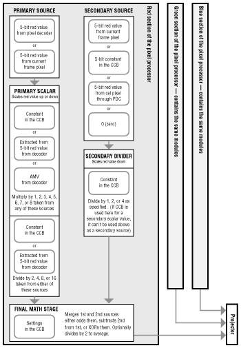

The pixel processor, like the CLUT sets, works separately with the red, green, and blue components of a color, processing them in parallel as shown in Figure 1. When it is done, the pixel processor combines the results into a single 15-bit color value.

Figure 1: Pixel Processor.
As shown in Figure 1, the pixel processor can accept color input from two simultaneous sources: the primary source and the secondary source. After scaling each source, the pixel processor merges the two sources and sends the result to the projector. In the simplest case, the pixel processor merely passes the primary source color through without modification. To do so, the secondary source is set to 0 (so there is effectively no secondary source) and the primary scalar does not scale the primary source at all (multiplying by 8 and dividing by 8, for example).
The CCB controls the pixel processor, choosing the input for both the primary and secondary sources. It also sets the different processing options for the colors as they pass through the pixel processor. These control parameters, called P-mode, are stored in the CCB, which contains space for two different P-modes. The CCB can be set to use either P-mode. The CCB can also be set so that each incoming pixel selects either of the P-modes with the P-mode bit read in the pixel decoder.
Whenever the pixel processor uses the current frame buffer pixel as a source, the buffer from which it reads pixels is called the read buffer. The buffer to which the projector writes cel pixels is called the write buffer. In most cases, the read and write buffers are the same; the cel engine reads pixels from the read buffer, processes them, and then projects pixels back into the same buffer in the same location. That's the case in the shadow example above.
In special cases, the cel engine can be set to use separate read and write buffers so that it reads frame buffer pixels from one buffer and then projects them into a completely separate buffer. This allows the pixel processor to use a cel's projected shape to pick up pixels from one buffer and then project it into another buffer.
The PMV can be any integer from 1 to 8 and the PDV can be 2, 4, 8, or 16. By setting the PMV to a maximum value of 8 and the PDV to a minimum value of 2, the resultant scalar turns out to be 8/2 (which is 4), the maximum color-value increase available in the primary scalar. By setting the PMV to a minimum value of 1 and the PDV to a maximum value of 16, the resultant scalar turns out to be 1/16 (which is 0.0625), the maximum decrease available in the primary scalar.
The full set of scaling values you can get with all the different combinations of multiplier and divider values is 0.0625, 0.125, 0.1875, 0.25, 0.3125, 0.375, 0.4375, 0.5, 0.625, 0.75, 0.875, 1, 1.25, 1.5, 1.75, 2, 2.5, 3, 3.5, and 4. If the secondary source is set to 0 and the final math stage uses its optional division by two, then a new set of scaling values results: 0.03125, 0.0625, 0.09375, 0.125, 0.15625, 0.1875, 0.21875, 0.25, 0.3125, 0.375, 0.4375, 0.5, 0.625, 0.75, 0.875, 1, 1.25, 1.5, 1.75, and 2.
Note that setting the scaling value to 1 turns off the effect of the primary scalar, because scaling by 1 leaves the incoming color value at its original value. The module still processes each incoming pixel, however, so scaling by 1 does not change rendering speed.
The PMV can come from any one of three sources set by the P-mode:
The pixel decoder multiplies the input color value according to the cel pixel's color magnitude, the larger the color value, the higher the multiplier. For example, if you use the frame buffer as the primary source and the high-bit RGB values for the PMV, the frame buffer color values are scaled higher wherever the cel-pixel color values are higher and scaled not as high wherever the cel pixel color values are lower.
The AMV allows each pixel to set its own PMV. If the cel is a coded 16-bit cel, then each pixel can carry a separate AMV for red, green, and blue. If the cel is a coded 8-bit cel, then each pixel carries a single 3-bit AMV that is duplicated for red, green, and blue. If you use different AMVs for red, green, and blue, you can tint resultant color values accordingly.
The primary PDV can come from either of two sources:
Note that the effect of scaling color values depends entirely on the current palette in the display generator's CLUT sets. If it is a normal linear ascending palette such as the one stored in the fixed CLUT set, then increasing color values will brighten the colors and decreasing color values darkens colors. If a linear descending palette is used, then increasing values darkens colors and decreasing values lightens them. If the palette is not linear, anticipating the effects of cel engine math on an image can be difficult.
The SDV comes from the 5 bits of the PIXC control word (the AV bits). The AV bits are also the secondary source for the cel engine math if the CCB is selected to be the secondary source. Note that when the SDV is taken from the CCB, the CCB cannot supply the secondary source. In that case, the secondary source would be a constant and there would be no need to scale it by a constant.
One common merging effect is averaging, which adds color values from two different images-the cel image and the frame buffer image, for example-and then divides by two. This averages the color between the two images, which can create some interesting effects, such as tinting the background image with the colors of the foreground image. Other merging effects use the shape of a pixel to scale frame buffer pixels up or down, creating shadows or spotlights.